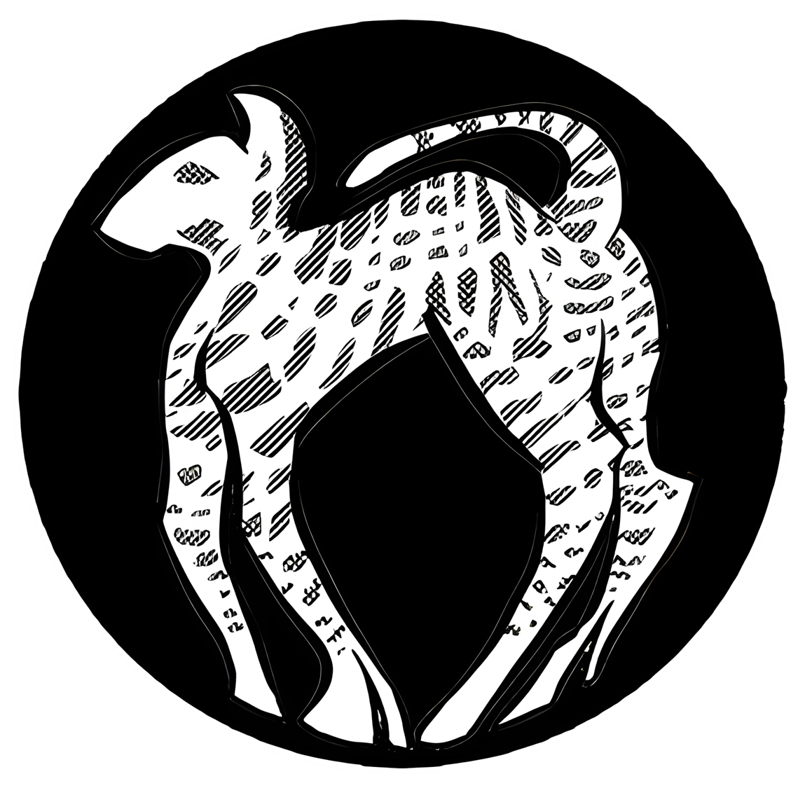
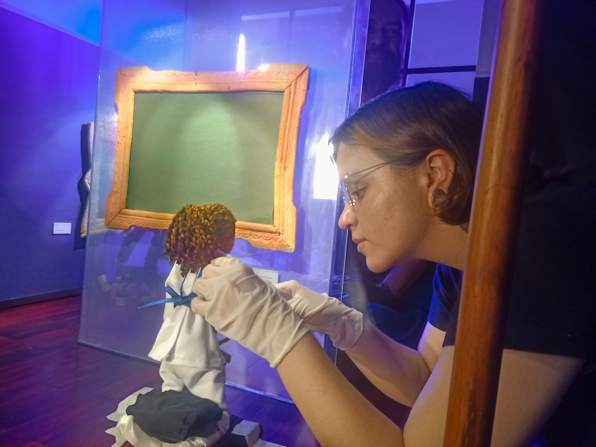
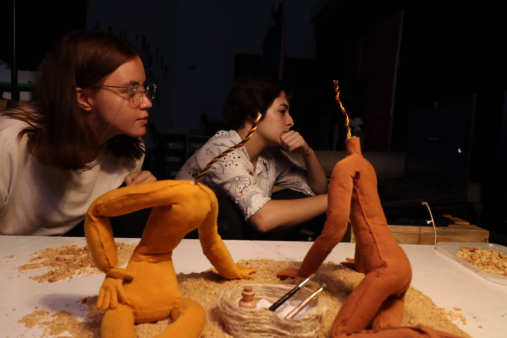
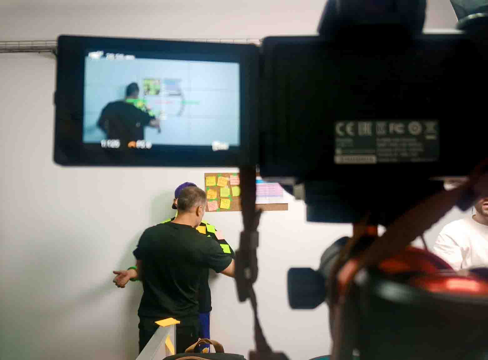

BIENVENIDOS AL SET


Nos enamoran las historias para ser desarrolladas en un lenguaje cinematográfico
Nos especializamos en animación, especificamente stop-motion.
Producimos películas live-action, y nos apasionan los videos clips y los podcasts.
En Serval Films, nos apasionan los géneros fantásticos, sarcásticos y oscuros, y nuestro objetivo es crear historias que incomoden, emocionen, conmuevan y sorprendan a nuestra audiencia.
En este equipo, todas las perspectivas y especialidades son acogidas, siempre que estén dispuestas a romper moldes mientras no se pierdan las estructuras fundamentales del cine.
Aprovechamos la tecnología para mejorar nuestra productividad sin perder el toque artesanal que nos hace únicos. En la era digital, valoramos lo original y lo humano en cada paso de nuestro proceso creativo.



" Nuestro ADN está en los relatos sociales, esos que mueven conciencia.
Detrás de nuestras películas, hay causas y organizaciones que buscan apoyo." - Productor Juan Pablo Soto
Basada alrededor de nuestro corto
“Una Más”, esta es una campaña social,
artística, y comercial que busca
educar sobre la violencia de género
con la ayuda de fundaciones y empresas aliadas.
¿Eres un espectador que quiere ver contenidos?
Explora nuestro catalogo actual de podcasts y cortometrajes¿Tienes un proyecto en mente y te gustaría colaborar?
¡Vuelve realidad tus ideas con nuestro equipo!¿Eres inversionista, sponsor o donante?
Venga le contamos como puede beneficiarse de la ley de Cine 814 y a la vez ayudar a construir patrimonio artístico